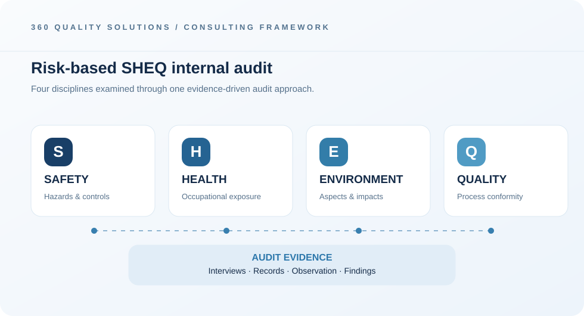

Plan the audit
Agree objectives, criteria, sampling and audit independence.
SHEQ INTERNAL AUDITS · PRETORIA
Evidence-led audits that support safer, stronger operations.
Request a consultationInternal auditing helps organisations test whether their safety, health, environmental and quality systems are effective in practice. 360 Quality Solutions provides structured SHEQ audit consulting for Pretoria businesses seeking clear findings and practical follow-up.
The work focuses on agreed audit criteria, processes, interviews and objective evidence. We look for conformity, control effectiveness and areas that warrant attention, then communicate findings in a structured report that supports timely corrective action.
An internal audit should assess both conformity and practical effectiveness. The four SHEQ disciplines may be reviewed together while using clear criteria, proportionate sampling and traceable findings.

Agree objectives, criteria, sampling and audit independence.
Review on-site controls, documents, interviews and records.
Report findings and help track corrective-action effectiveness.
Identify activities, sites, objectives and relevant standards or policies.
Review records, interview teams and sample relevant processes.
Explain findings, discuss priorities and support corrective-action planning.
SHEQ refers to Safety, Health, Environment and Quality. Internal audits may address one or several of these management-system areas.
These standards can inform the agreed audit criteria where appropriate to the organisation’s scope and management system.
No. Internal audits help verify an organisation’s management system, while certification audits are conducted separately by certification bodies.
Share your operational goals and we can discuss a suitable starting point.